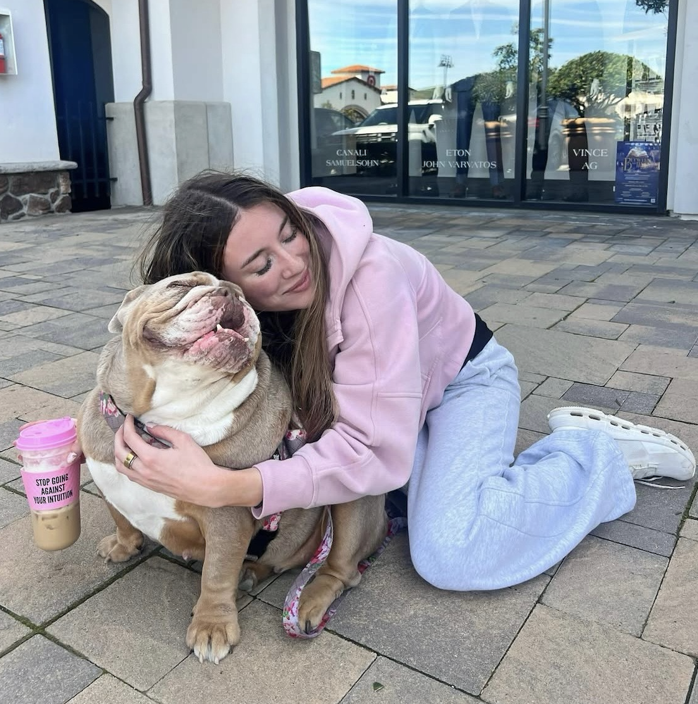

Michele Joseph
I’m interested in AI reasoning stability and the systems that shape what humans and models trust. I’m building ideas around Compression-Aware Intelligence (CAI), Contradish, and the broader question of how we make intelligence more stable.

About
I work across AI and law-adjacent questions with a focus on reasoning stability and contradiction detection for modern models. I care about making invisible failures visible. I studied computer science and business at Cornell University and am an incoming J.D. candidate at Harvard Law School.
Interests
AI reliability • model evaluation • reasoning stability • contradiction detection • law/regulation • startups • philosophy of intelligence
Work
Note
This site is a simple index of what I’m working on right now.